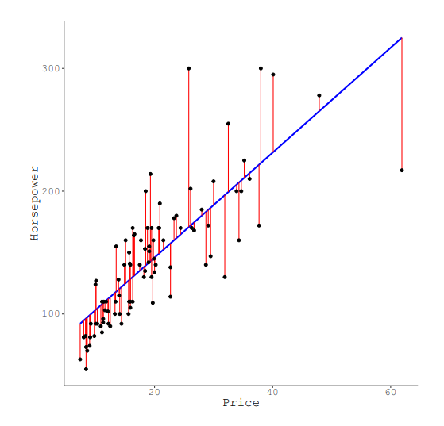
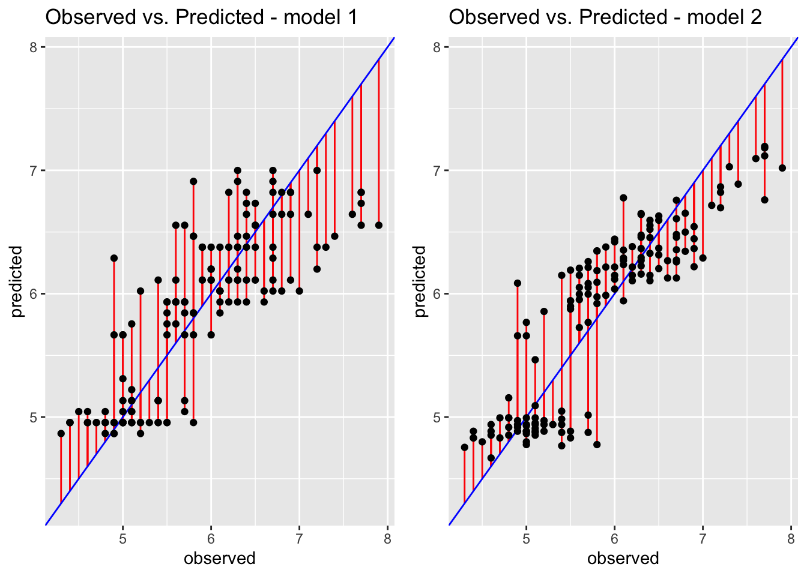

library(dplyr)
library(magrittr)
library(ggplot2)
library(gridExtra)Lab 3
Part 1: Repeat from last week
We will use the following packages in this practical:
We will use the same data that we used last week to perform a simple linear regression, the Iris dataset. But now, we will extend on this simple model with multiple variables.
In order to do this, we first need to load the data again and run the simple model where Sepal length is predicted by Petal width.
data <- iris # load the data
head(iris) # inspect the data Sepal.Length Sepal.Width Petal.Length Petal.Width Species
1 5.1 3.5 1.4 0.2 setosa
2 4.9 3.0 1.4 0.2 setosa
3 4.7 3.2 1.3 0.2 setosa
4 4.6 3.1 1.5 0.2 setosa
5 5.0 3.6 1.4 0.2 setosa
6 5.4 3.9 1.7 0.4 setosa# specify model
model1 <- lm(Sepal.Length ~ Petal.Width,
data = data)
# ask for summary
summary(model1)
Call:
lm(formula = Sepal.Length ~ Petal.Width, data = data)
Residuals:
Min 1Q Median 3Q Max
-1.38822 -0.29358 -0.04393 0.26429 1.34521
Coefficients:
Estimate Std. Error t value Pr(>|t|)
(Intercept) 4.77763 0.07293 65.51 <2e-16 ***
Petal.Width 0.88858 0.05137 17.30 <2e-16 ***
---
Signif. codes: 0 '***' 0.001 '**' 0.01 '*' 0.05 '.' 0.1 ' ' 1
Residual standard error: 0.478 on 148 degrees of freedom
Multiple R-squared: 0.669, Adjusted R-squared: 0.6668
F-statistic: 299.2 on 1 and 148 DF, p-value: < 2.2e-16Part 2: Multiple linear regression
You can add additional predictors to a model. This can improve the fit and the predictions. When multiple predictors are used in a regression model, it’s called a Multiple linear regression. You specify this model as outcome_variable ~ predictor_1 + predictor_2 + ... + predictor_n.
- Add Petal length as a second predictor to the model specified as
model1and store this under the namemodel2, and supply summary statistics. Again, give a substantive interpretation of the coefficients and the model.
# Specify additional predictors
model2 <- lm(Sepal.Length ~ Petal.Width + Petal.Length,
data = data)
# Ask for summary statistics again
summary(model2)
Call:
lm(formula = Sepal.Length ~ Petal.Width + Petal.Length, data = data)
Residuals:
Min 1Q Median 3Q Max
-1.18534 -0.29838 -0.02763 0.28925 1.02320
Coefficients:
Estimate Std. Error t value Pr(>|t|)
(Intercept) 4.19058 0.09705 43.181 < 2e-16 ***
Petal.Width -0.31955 0.16045 -1.992 0.0483 *
Petal.Length 0.54178 0.06928 7.820 9.41e-13 ***
---
Signif. codes: 0 '***' 0.001 '**' 0.01 '*' 0.05 '.' 0.1 ' ' 1
Residual standard error: 0.4031 on 147 degrees of freedom
Multiple R-squared: 0.7663, Adjusted R-squared: 0.7631
F-statistic: 241 on 2 and 147 DF, p-value: < 2.2e-16# When comparing the coefficients of model 2 with the coefficients of model 1, we can see that adding a predictor can change the coefficients of other predictors as well (it is a new model after all). In this example, it is notable that the coefficient for petal width has become a negative number, while it was positive in model 1.Categorical predictors
Up to here, we only included continuous predictors in our models. We will now include a categorical predictor in the model as well.
When a categorical predictor is added, this predictor is split in several contrasts (or dummies), where each group is compared to a reference group. In our example Iris data, the variable ‘Species’ is a categorical variable that indicate the species of flower. This variable can be added as example for a categorical predictor. Contrasts, and thus the dummy coding, can be inspected through contrasts().
- Add species as a predictor to the model specified as
model2, store it under the namemodel3and interpret the categorical coefficients of this new model.
# Create 3rd model with categorical predictor
model3 <- lm(Sepal.Length ~ Sepal.Width + Petal.Length + Species,
data = data)
# Ask for summary data
summary(model3)
Call:
lm(formula = Sepal.Length ~ Sepal.Width + Petal.Length + Species,
data = data)
Residuals:
Min 1Q Median 3Q Max
-0.82156 -0.20530 0.00638 0.22645 0.74999
Coefficients:
Estimate Std. Error t value Pr(>|t|)
(Intercept) 2.39039 0.26227 9.114 5.94e-16 ***
Sepal.Width 0.43222 0.08139 5.310 4.03e-07 ***
Petal.Length 0.77563 0.06425 12.073 < 2e-16 ***
Speciesversicolor -0.95581 0.21520 -4.442 1.76e-05 ***
Speciesvirginica -1.39410 0.28566 -4.880 2.76e-06 ***
---
Signif. codes: 0 '***' 0.001 '**' 0.01 '*' 0.05 '.' 0.1 ' ' 1
Residual standard error: 0.3103 on 145 degrees of freedom
Multiple R-squared: 0.8633, Adjusted R-squared: 0.8595
F-statistic: 228.9 on 4 and 145 DF, p-value: < 2.2e-16# In the output, we see that 'Species' has multiple rows of output, and that one species (Setosa) does not seem to show. Setosa is the reference group. The other two lines are those respecitve groups compared to the setosa group. This means that that the predicted sepal length of a versicolor would be .9558 lower than the predicted value of a setosas with the same values on the other variables.Part 3: Model comparison
Now you have created multiple models, you can compare how well these models function (compare the model fit). There are multiple ways of testing the model fit and to compare models, as explained in the lecture and the reading material. In this practical, we use the following:
- AIC (use the function
AIC()on the model object) - BIC (use the function
BIC()on the model object) - MSE (use
MSE()of theMLmetricspackage, or calculate by transforming themodel$residuals) - Deviance test (use
anova()to compare 2 models)
- Compare the fit of the model specified under question 5 and the model specified under question 8. Use all four fit comparison methods listed above. Interpret the fit statistics you obtain/tests you use to compare the fit.
AICvalues <- rbind(AIC(model1), AIC(model2))
BICvalues <- rbind(BIC(model1), BIC(model2))
MSEvalues <- rbind(mean(model1$residuals^2),
mean(model2$residuals^2))
modelfitvalues <- cbind(AICvalues, BICvalues, MSEvalues)
rownames(modelfitvalues) <- c("model1", "model2")
colnames(modelfitvalues) <- c("AIC", "BIC", "MSE")
modelfitvalues AIC BIC MSE
model1 208.2215 217.2534 0.2254326
model2 158.0468 170.0894 0.1592046# We see that the second AIC is lower, and thus this model has a better fit-complexity trade-off. The BIC has the same conclusion as the AIC in this case. The MSE of the second model is lower, and therefore indicates less error and a better fit.
# R2 difference test (deviance)
anova(model1, model2)Analysis of Variance Table
Model 1: Sepal.Length ~ Petal.Width
Model 2: Sepal.Length ~ Petal.Width + Petal.Length
Res.Df RSS Df Sum of Sq F Pr(>F)
1 148 33.815
2 147 23.881 1 9.9342 61.151 9.414e-13 ***
---
Signif. codes: 0 '***' 0.001 '**' 0.01 '*' 0.05 '.' 0.1 ' ' 1# The residual sum of squares is significantly lower for model 2, indicating a better fit for this modelPart 4: Residuals: observed vs. predicted
When fitting a regression line, the predicted values have some error in comparison to the observed values. The sum of the squared values of these errors is the sum of squares. A regression analysis finds the line such that the lowest sum of squares possible is obtained.
The image below shows how the predicted (on the blue regression line) and observed values (black dots) differ and how the predicted values have some error (red vertical lines).

When having multiple predictors, it becomes harder or impossible to make such a plot as above (you need a plot with more dimensions). You can, however, still plot the observed values against the predicted values and infer the error terms from there.
- Create a dataset of predicted values for model 1 by taking the outcome variable
Sepal.Lengthand thefitted.valuesfrom the model.
predvals1 <- cbind(data$Sepal.Length, model1$fitted.values)
colnames(predvals1) <- c("observed", "predicted")
predvals1 <- as.data.frame(predvals1)- Create an observed vs. predicted plot for model 1 (the red vertial lines are no must).
obspred1 <- ggplot(data = predvals1, aes(x = observed, y = predicted)) +
geom_segment(aes(xend = observed, yend = observed), col = "red") +
geom_abline(slope = 1, intercept = 0, col = "blue") +
geom_point() +
ggtitle("Observed vs. Predicted - model 1")- Create a dataset of predicted values and create a plot for model 2.
predvals2 <- cbind(data$Sepal.Length, model2$fitted.values)
colnames(predvals2) <- c("observed", "predicted")
predvals2 <- as.data.frame(predvals2)
obspred2 <- ggplot(data = predvals2, aes(x = observed, y = predicted)) +
geom_segment(aes(xend = observed, yend = observed), col = "red") +
geom_abline(slope = 1, intercept = 0, col = "blue") +
geom_point() +
ggtitle("Observed vs. Predicted - model 2")- Compare the two plots and discuss the fit of the models based on what you see in the plots. You can combine them in one figure using the
grid.arrange()function.
grid.arrange(obspred1, obspred2, ncol = 2)
# Above, the observed vs. predicted plots for both model 1 (1 predictor) and model 2 (an additional predictor) are shown. In the second plot, it can be seen that all the red lines are shorter, indicating less error, a lower sum of squares, and thus a better fit.Calculating new predicted values
A regression model can be used to predict values for new cases that were not used to built the model. The regression equation always consists of coefficients (\(\beta\)s) and observed variables (\(X\)):
\[\hat{y} = \beta_0 + \beta_1 * X_{a}* + \beta_2 * X_b + \ldots + \beta_n * X_n\]